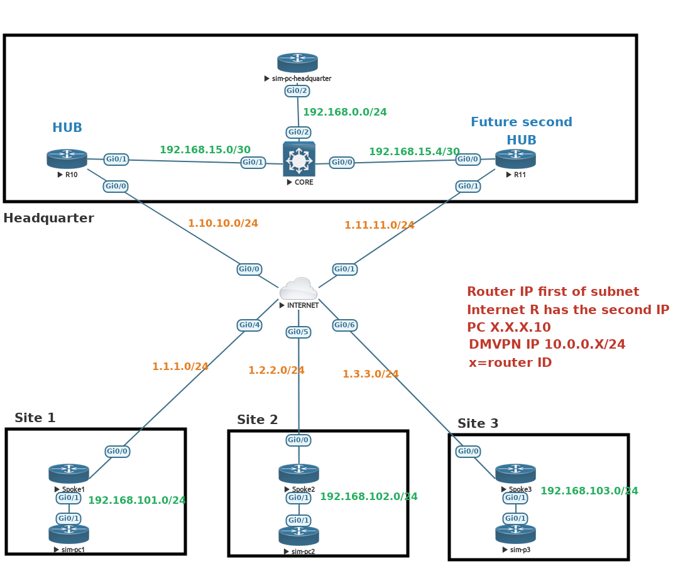

dmvpn_concept
DMVPN Concept
TThe Dynamic Multipoint VPN (DMVPN) feature combines GRE tunnels, IPsec encryption, and NHRP routing.
Source cisco.com Three phase exist and each of them add functionnality to the last phase. Similar to version.
DMVPN Phase 1
Designed for Hub and Spoke communications only.
- Spokes talk to each other through the hub.
DMVPN Phase 2
- Spoke to Spoke communications are now working since they are using mGRE tunnel.
DMVPN Phase 3
- Ability to add explicit route summarization.(large deployment,Send summary route instead of thousand of spoke route)
- Support multi-tiers design
- Hub can now redirect flow.Tell the spoke about a better path via nhrp
- Spoke can now use shortcut: NHRP is allowed to overwrite CEF.
DMVPN HUB Configuration Phage 1 No IPSEC
interface GigabitEthernet0/0
ip address 1.10.10.1 255.255.255.0
!
interface GigabitEthernet0/1
ip address 192.168.15.1 255.255.255.252
ip route 0.0.0.0 0.0.0.0 1.10.10.2
interface Tunnel0
#Required
ip address 10.0.0.10 255.255.255.0
no ip split-horizon eigrp 100
ip nhrp network-id 30
tunnel source GigabitEthernet0/0
tunnel mode gre multipoint
#Optionnal
bandwidth 1000
no ip redirects
ip mtu 1400
ip nhrp authentication MYpass1
ip tcp adjust-mss 1360
delay 1000
tunnel key 7777
router eigrp dmvpnlab
!
address-family ipv4 unicast autonomous-system 100
!
topology base
exit-af-topology
network 10.0.0.0 0.0.0.255
network 192.168.15.0 0.0.0.3
exit-address-family
!DMVPN Spoke1 Configuration Phage 1
interface GigabitEthernet0/0
ip address 1.1.1.1 255.255.255.0
interface GigabitEthernet0/1
ip address 192.168.101.1 255.255.255.0
ip route 0.0.0.0 0.0.0.0 1.1.1.2
interface Tunnel0
#Required
ip address 10.0.0.1 255.255.255.0
no ip split-horizon eigrp 100
ip nhrp network-id 30
ip nhrp nhs 10.0.0.10 nbma 1.10.10.1 multicast
tunnel source GigabitEthernet0/0
tunnel destination 1.10.10.1
no ip split-horizon eigrp 100 #Required EIGRP
#Optionnal
bandwidth 1000
no ip redirects
ip mtu 1400
ip nhrp authentication MYpass1
ip tcp adjust-mss 1360
delay 1000
tunnel key 7777
!
router eigrp 100
network 10.0.0.0
network 192.168.101.0DMVPN HUB Configuration Phage 2 No IPSEC
#Same has phase 1 add the following
no ip next-hop-self eigrp 1DMVPN Spoke1 Configuration Phage 2
#Same has phase 1 add the following
tunnel mode gre multipointDMVPN HUB Configuration Phage 2 No IPSEC
#Same has phase 1+2 add the following
ip nhrp redirectDMVPN Spoke1 Configuration Phage 2
#Same has phase 1+2 add the following
ip nhrp shortcut